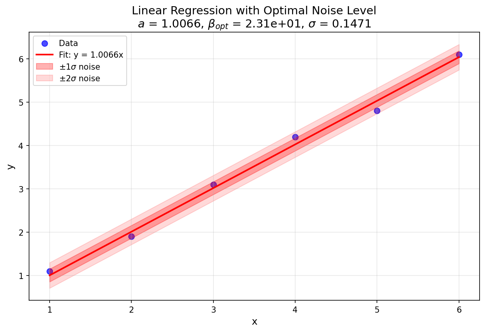
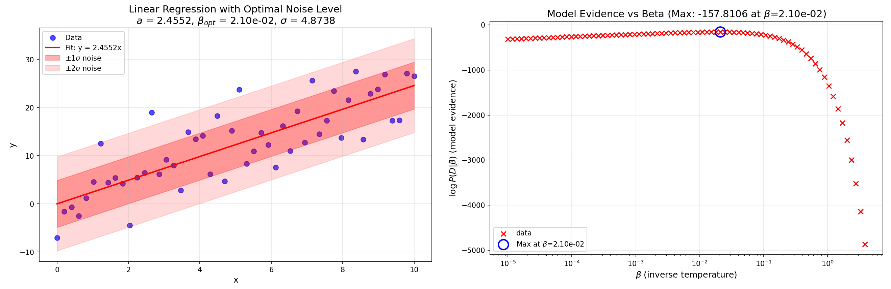

Example: Linear regression and noise estimation¶
Introduction¶
This tutorial shows how to use the ODAT-SE framework to perform linear regression analysis and estimate noise levels in experimental data through Bayesian inference and partition function methods. The goal of this tutorial is to demonstrate the automatic determination of optimal noise levels in experimental data by maximizing the model evidence.
Theoretical Foundation¶
Bayesian Framework for Parameter Estimation¶
We consider experimental measurement data \(D \equiv \{(x_{\mu,i},y_{\mu,i})\}_{\mu,i}\), where:
\(i\) indexes each of the \(n\) data points for a given dataset (such that \(i\) runs from 1 to \(n\)),
\(\mu\) indexes each of the \(N\) datasets (such that \(\mu\) runs from 1 to \(N\)), and that the datasets are explained by the same model (e.g. data from different trials, data from different XRD spots, etc.),
\((x_{\mu,i},y_{\mu,i})\) represents the \(i\) -th measurement in the \(\mu\) -th dataset.
Our goal is to estimate:
the parameters \(\theta\) in some model that maps state quantities \(x\) to observations \(y\), and
the noise level \(\sigma\) in the experimental data.
In this tutorial, we perform a linear regression on the observed data to obtain a linear model for the former, and use maximum likelihood estimation on the model evidence to determine the latter.
Defining the Likelihood Function¶
To measure the distance between calculated and observed measurements, we use the sum of squared residuals:
Assuming Gaussian noise with standard deviation \(\sigma\), the likelihood function (which is the likelihood of the observation \(y_{\mu,i}\) under a given model) for a single data point is:
where \(\beta = (2\sigma^2)^{-1}\) is the inverse temperature parameter and parametrizes the model together with the predicted state quantity \(x\).
The total likelihood for all measurements is the product of their likelihoods under a given model:
Defining the Model Evidence¶
We assume a uniform prior distribution over the parameter space \(\Omega\):
where \(V_\Omega = \int_\Omega dx\) is the normalization volume. The model evidence (which corresponds to the marginal likelihood) is obtained by marginalizing over all possible parameter values:
We can define the partition function to be:
This means that we can write the model evidence as:
Analytical Solution for Linear Regression¶
We assume that there is a single dataset. For the simple linear model \(y = ax\), the objective function (sum of squared residuals) is:
If we expand the objective function, we obtain:
We define the following intermediate quantities:
Then, by completing the square, we can rewrite the objective as:
We can identify the following quantities:
\(a^* = \frac{B}{A}\) is the best-fitting parameter, and
\(f^* = C - \frac{B^2}{A}\) is the minimum value of the cost function \(f\) at \(f(a^*; D)\).
Calculating the Model Evidence¶
To evaluate the model evidence, we must first compute the partition function \(Z(D|\beta)\). We first consider the partition function using the objective function \(f(a; D)\), where the model parameter \(a\) has domain \([-L/2, L/2]\).
We perform a change of variables \(t = a - a^*\) and move the constant factor out of the integral before evaluating:
In the above, we used the definition of the error function as an integral:
Thus, the model evidence can be written out:
The error function approaches 1 and -1 as its argument tends to \(\infty\) and \(-\infty\) respectively. When \(L\) is taken to be sufficiently large, we obtain the following result for the model evidence:
Estimating the Noise Level¶
The principle of maximum likelihood provides a guide for how we might be able to obtain an estimate of the noise level. Maximizing the logarithm of the model evidence with respect to \(\beta\) (in the large \(L\) limit), we obtain:
The optimal inverse temperature and associated noise level can then be determined:
This provides a principled, data-driven estimate of the noise level.
ODAT-SE Implementation¶
Code Implementation¶
For this tutorial, files can be located in sample/linreg_with_noise relative to the root of the repository. The main script is named linreg_with_noise.py.
User-defined Target Function¶
The ODAT-SE framework allows users to define custom solvers by inheriting from the SolverBase class. Here, we demonstrate how to create a linear regression solver that supports a configurable dimension (polynomial order) and optional intercept via the design matrix \(X\).
#!/usr/bin/env python
"""
Integrated linear regression and model evidence analysis
Combines a custom ODAT-SE solver implementing linear regression with model evidence calculation
"""
import odatse
import sys, os, argparse
import contextlib
import numpy as np
from matplotlib import pyplot as plt
from odatse.algorithm import choose_algorithm
sys.path.append("../../script")
from plt_model_evidence import load_data, calc_log_pdb, print_log_pdb, plot_log_pdb
class LinearRegression(odatse.solver.SolverBase):
"""Linear regression solver class"""
def __init__(self, info):
super().__init__(info)
data_file = info.solver["reference"]["path"]
self.has_intercept = info.solver.get("has_intercept", False)
data = np.loadtxt(data_file, unpack=True)
self.xdata = data[0]
self.ydata = data[1]
dimension = self.dimension
self.n = len(self.xdata)
self.X = np.zeros((self.n, dimension))
if self.has_intercept:
self.X[:, 0] = 1.0
else:
self.X[:, 0] = self.xdata.copy()
for i in range(1, dimension):
self.X[:, i] = self.X[:, i - 1] * self.xdata
def evaluate(self, xs, args, nprocs=1, nthreads=1):
loss = np.sum((self.X @ xs - self.ydata) ** 2)
return loss
The target function is defined in the evaluate function. Here, we use the quadratic loss (sum of squared residuals) with a design matrix \(X\) so that the model can represent either \(y = a x\) (dimension = 1, no intercept) or polynomial fits such as \(y = a_0 + a_1 x\) (dimension = 2 with has_intercept = true).
Model Evidence Calculation¶
For the calculation of the model evidence we import functions from the post-processing tool plt_model_evidence.py (for details, see Post-Processing Tools). To plot the linear fit together with noise bands, we use the following function (which supports both single coefficient and multiple coefficients, with or without intercept):
def plot_linear_fit_with_noise(xdata, ydata, a, noise_level, beta_opt, output_file, intercept=False):
fig, ax = plt.subplots(figsize=(10, 6))
# Plot original data points and fitted line
ax.scatter(xdata, ydata, s=50, alpha=0.7, label='Data', color='blue')
x_fit = np.linspace(xdata.min(), xdata.max(), 100)
y_fit = np.zeros(len(x_fit))
if intercept:
x = np.ones(len(x_fit))
else:
x = x_fit.copy()
if not isinstance(a, np.ndarray):
a = np.array([a])
for i in range(len(a)):
y_fit += a[i] * x
x *= x_fit
ax.plot(x_fit, y_fit, 'r-', linewidth=2, label=f'Coefficients: {a}')
# Add noise bands (\pm1\sigma, \pm2\sigma)
ax.fill_between(x_fit, y_fit - noise_level, y_fit + noise_level,
alpha=0.3, color='red', label=f'$\\pm1\\sigma$ noise')
ax.fill_between(x_fit, y_fit - 2*noise_level, y_fit + 2*noise_level,
alpha=0.15, color='red', label=f'$\\pm2\\sigma$ noise')
ax.set_xlabel('x', fontsize=12)
ax.set_ylabel('y', fontsize=12)
ax.set_title(f'Linear Regression with Optimal Noise Level\n' +
f'$a$ = {a}, $\\beta_{{opt}}$ = {beta_opt:.2e}, $\\sigma$ = {noise_level:.4f}', fontsize=14)
ax.legend(loc='best')
ax.grid(True, alpha=0.3)
fig.savefig(output_file, dpi=150, bbox_inches='tight')
plt.close()
print(f"Linear fit plot saved to: {output_file}")
The main function accepts a TOML file as input and optionally a log file. Other arguments include the normalization factor of the prior and arguments related to plot window selection when visualizing the model evidence plot.
if __name__ == "__main__":
parser = argparse.ArgumentParser(description='Integrated linear regression and model evidence analysis')
# Basic parameters
parser.add_argument('--input', type=str, default='input.toml',
help='ODAT-SE input configuration file path')
parser.add_argument('--logfile', type=str, default=None,
help='ODAT-SE run log file (default: output_dir/odatse_run.log)')
# Model evidence calculation parameters
parser.add_argument('-V', '--volume', type=float, default=1.0,
help='Normalization factor of prior probability distribution (default is 1.0)')
# Auto-focus parameters
parser.add_argument('--auto-focus', action='store_true',
help='Auto-focus on maximum model evidence region')
parser.add_argument('--focus-factor', type=float, default=0.5,
help='Auto-focus tightness (0-1, smaller is tighter, default: 0.5)')
args = parser.parse_args()
# Run main program
print("="*60)
print("Starting Linear Regression and Model Evidence Analysis")
print("="*60)
# Step 1: Run ODAT-SE
print("\nStep 1: Running ODAT-SE linear regression...")
sys.argv = ["script.py", args.input, "--init"]
# Initialize ODAT-SE to get output directory
info, run_mode = odatse.initialize()
output_dir = info.base.get("output_dir", "./output")
# Create output directory if it doesn't exist
os.makedirs(output_dir, exist_ok=True)
# Set log file path
if args.logfile is None:
args.logfile = os.path.join(output_dir, "odatse_run.log")
# Run ODAT-SE with redirected output
with open(args.logfile, "w") as f:
with contextlib.redirect_stdout(f), contextlib.redirect_stderr(f):
solver = LinearRegression(info)
runner = odatse.Runner(solver, info)
alg_module = choose_algorithm(info.algorithm["name"])
alg = alg_module.Algorithm(info, runner, run_mode=run_mode)
result = alg.main()
print("ODAT-SE run completed")
print(f"Output directory: {output_dir}")
# Get fitting parameters
a = result['x']
xdata = solver.xdata
X = solver.X
ydata = solver.ydata
n_data = solver.n
print(f"\nFitting results:")
print(f" Coefficients a = {a}")
print(f" Number of data points n = {n_data}")
# Step 2: Load fx.txt data and calculate model evidence
print("\nStep 2: Calculating model evidence...")
fx_file = os.path.join(output_dir, "fx.txt")
if not os.path.exists(fx_file):
raise FileNotFoundError(f"Error: Cannot find file {fx_file}")
beta, logz = load_data(fx_file)
log_pdb = calc_log_pdb(beta, logz, np.asarray([n_data], dtype=np.int64), np.asarray([1], dtype=np.float64), args.volume)
# Save model evidence data
evidence_file = os.path.join(output_dir, "model_evidence.txt")
print_log_pdb(evidence_file, beta, log_pdb)
# Step 3: Find optimal beta value
print("\nStep 3: Finding optimal beta value...")
valid_mask = np.isfinite(log_pdb) & np.isfinite(beta)
if not np.any(valid_mask):
raise ValueError("No valid data points")
max_idx = np.argmax(log_pdb[valid_mask])
beta_opt = beta[valid_mask][max_idx]
log_pdb_max = log_pdb[valid_mask][max_idx]
print(f"\nOptimal parameters:")
print(f" beta_opt = {beta_opt:.6e}")
print(f" log P(D;beta_opt) = {log_pdb_max:.6f}")
# Step 4: Calculate noise level
noise_level = 1.0 / np.sqrt(2.0 * beta_opt)
print(f"\nNoise level:")
print(f" std = 1/sqrt(2*beta_opt) = {noise_level:.6f}")
# Calculate R^2 value
y_pred = X @ np.asarray(a)
ss_res = np.sum((ydata - y_pred)**2)
ss_tot = np.sum((ydata - np.mean(ydata))**2)
r_squared = 1 - (ss_res / ss_tot) if ss_tot != 0 else 0
print(f"\nFitting quality:")
print(f" R^2 = {r_squared:.6f}")
print(f" Residual sum of squares = {ss_res:.6f}")
# Step 5: Generate plots
print("\nStep 5: Generating plots...")
# Plot model evidence and linear fit with noise bands
evidence_plot = os.path.join(output_dir, "model_evidence.png")
plot_log_pdb(evidence_plot, beta, log_pdb, None, args.auto_focus, args.focus_factor)
fit_plot = os.path.join(output_dir, "linear_fit_with_noise.png")
plot_linear_fit_with_noise(xdata, ydata, a, noise_level, beta_opt, output_file=fit_plot,
intercept=solver.has_intercept)
# Save results to file
print("\nStep 6: Saving results...")
results_file = os.path.join(output_dir, "analysis_results.txt")
with open(results_file, "w") as f:
f.write("Linear regression and model evidence analysis results\n")
f.write("="*50 + "\n\n")
f.write(f"Fitting parameters:\n")
f.write(f" Coefficients a = {a}\n")
f.write(f" Number of data points n = {n_data}\n\n")
f.write(f"Optimal parameters:\n")
f.write(f" beta_opt = {beta_opt:.6e}\n")
f.write(f" log P(D;beta_opt) = {log_pdb_max:.6f}\n\n")
f.write(f"Noise level:\n")
f.write(f" std = {noise_level:.6f}\n\n")
f.write(f"Fitting quality:\n")
f.write(f" R^2 = {r_squared:.6f}\n")
f.write(f" Residual sum of squares = {ss_res:.6f}\n")
print(f"Results saved to: {results_file}")
print("\n" + "="*60)
print("Analysis completed!")
print(f"All output files are saved in: {output_dir}")
print("="*60)
Usage Examples¶
Example 1: Six-Point Linear Regression¶
Step 1: Prepare Input Data¶
Create a data file data.txt with two columns (x and y values):
1.0 1.1
2.0 1.9
3.0 3.1
4.0 4.2
5.0 4.8
6.0 6.1
Step 2: Create the ODAT-SE Input File¶
Create input.toml according to the ODATSE configuration (model evidence is available for Replica Exchange MC and Population Annealing MC algorithms):
[base]
dimension = 1
output_dir = "./output_data"
[solver]
name = "user"
[solver.reference]
path = "./data.txt"
[algorithm]
name = "pamc"
seed = 12345
[algorithm.param]
min_list = [-20.0]
max_list = [20.0]
step_list = [0.05]
[algorithm.pamc]
Tnum = 100
bmin = 1e-5
bmax = 1e2
Tlogspace = true
numsteps_annealing = 100
nreplica_per_proc = 10
Step 3: Run the Analysis¶
Execute the script, passing input.toml as the input argument:
python linreg_with_noise.py --input input.toml
To use the auto-focus feature that determines a suitable plot window that includes the maximum of the model evidence plot according to a focus factor from 0 to 1, we can supply the optional --auto-focus and --focus-factor (default: 0.5) parameters:
python linreg_with_noise.py --input input.toml --auto-focus --focus-factor 0.3
Theoretical Calculation¶
Using the data file described previously, we consider six points:
By applying the formulas presented earlier, we can obtain theoretical values for \(a^*\), \(f^*\), and \(\sigma_{\text{opt}}\) (through \(\beta_{\text{opt}}\)):
Numerical Results¶
The PAMC algorithm yields:
\(a^* = 1.0066\) (numerical, single coefficient for dimension = 1)
\(\beta_{\text{opt}} = 23.101\) (numerical)
\(\sigma_{\text{opt}} = 0.14712\) (from \(\beta_{\text{opt}}\))
Factors that cause the slight difference in \(\beta\) values include the use of a discretized temperature range in the annealing schedule and statistical fluctuations in the partition function estimation due to finite sampling in the Monte Carlo method.
{kind=link}

Fig. 9 Figure 1: Linear regression plot for the dataset used in this example (output: linear_fit_with_noise.png).¶
The estimated noise level \(\sigma \approx 0.1\) is reasonable given the deviations of \(y_i\) from the fitted line.
Example 2: Artificial Data with Different Noise Levels¶
This example demonstrates the robustness of the noise estimation method by maximizing model evidence using data at three different noise levels.
Step 1: Prepare Input Data¶
The sample provides a script data_gen.py that generates linear data with Gaussian noise at configurable noise levels. It reads parameters from a file (e.g. parameters.txt). Example parameter file:
a = 2.5
n = 50
x_min = 0.0
x_max = 10.0
noise_levels = 1.0, 3.0, 5.0
seed = 42
Run the data generator (optionally passing a parameter file; default is parameters.txt):
python data_gen.py parameters.txt
This produces data files named data_noise1.0.txt, data_noise3.0.txt, data_noise5.0.txt (when using the default datafile_prefix), and a summary figure data.png. The script supports vector coefficients a (e.g. a = 2.5, 0.1 for a polynomial) and custom datafile_prefix.

Fig. 10 Figure 2: Artificial data generated from the function \(y=2.5x\) with Gaussian noise at levels \(\sigma^*=1,3,5\) (generated by data_gen.py; default output data.png).¶
Step 2: Create the ODAT-SE Input File¶
Use the same structure as in Example 1. Set [base].output_dir and [solver.reference].path to the desired output directory and one of the generated data files (e.g. ./data_noise1.0.txt). For multiple runs, change path to data_noise3.0.txt or data_noise5.0.txt as needed.
Step 3: Run the Analysis¶
Run the script for each of the three datasets (change path in input.toml to the corresponding data file and output_dir if desired, then run):
python linreg_with_noise.py --input input.toml
With the auto-focus feature, the invocation could look like:
python linreg_with_noise.py --input input.toml --auto-focus --focus-factor 0.3
Numerical Results¶
After performing a linear regression and noise estimation on each of the three datasets, we obtain the following results:
| Slope | Noise level | Fitted slope | Estimated noise level |
| $$a^*=2.5$$ | $$\sigma^*=1$$ | $$a=2.4516$$ | $$\sigma=0.8820$$ |
| $$a^*=2.5$$ | $$\sigma^*=3$$ | $$a=2.4844$$ | $$\sigma=2.5412$$ |
| $$a^*=2.5$$ | $$\sigma^*=5$$ | $$a=2.4552$$ | $$\sigma=4.8738$$ |
The regression plot and model evidence plot for the case where the model has noise level \(\sigma=5\) are presented below. The fit figure is saved as linear_fit_with_noise.png in the run’s output directory.

Fig. 11 Figure 3: Linear regression plot and model evidence plot for the dataset at noise level \(\sigma^*=5\).¶